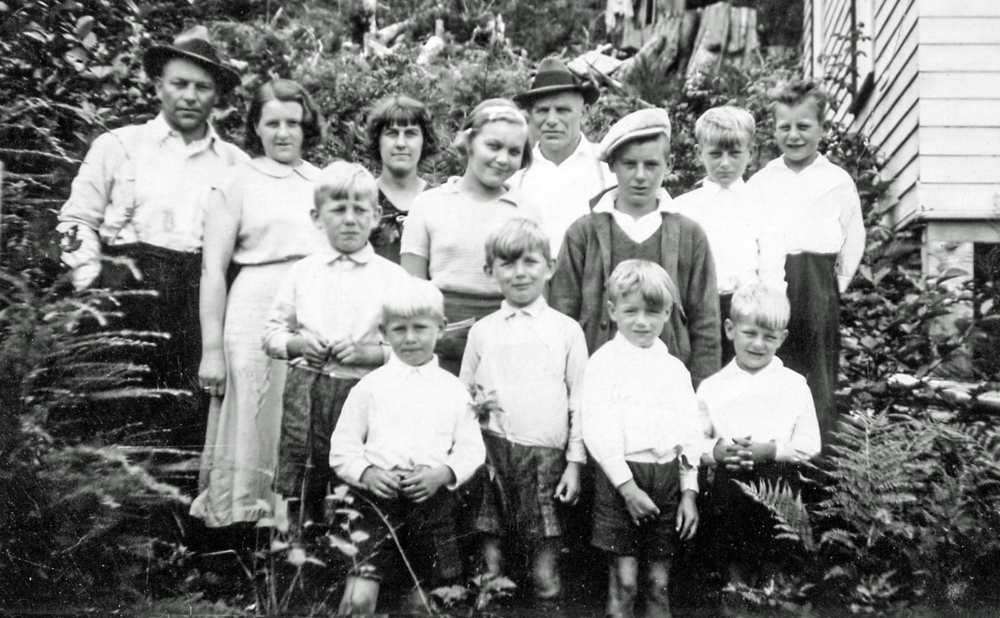

Anna Gjertine Pedersdatter
K, #3176, f. 30 september 1848, d. 11 mai 1920
Foreldre
Biografi
Anna Gjertine Pedersdatter ble født den 30 september 1848 Persvik, Foldereid, Nærøy, Nord-Trøndelag. Hun giftet seg med
Johan Edvard Petersen den 20 juni 1878. Hun døde den 11 mai 1920 på/i Horvereid; Kolvereid, Nærøy, Nord-Trøndelag.
Anna Gjertine Pedersdatter was also known as Anna Gjertine Petersen.
| Sist redigert |
20 desember 2010 00:00:00 |
| Slektskap | 4-menning 4 ganger forskjøvet til Håkon Wahl |
Beret Torstensdatter Horvereid
K, #3177, f. 1757, d. 25 mai 1815
Foreldre
Biografi
Beret Torstensdatter Horvereid ble født i 1757 Horvereid; Kolvereid, Nærøy, Nord-Trøndelag. Hun giftet seg med
Jens Jenssen Kruse den 17 juli 1782. Hun døde den 25 mai 1815 på/i Nærøy, Nord-Trøndelag.
| Sist redigert |
20 desember 2010 00:00:00 |
| Slektskap | Søster av 3.tippoldefar/mor til Håkon Wahl |
Jens Jenssen Kruse
M, #3178, f. omtrent 1744, d. 21 mai 1818
Foreldre
Biografi
Jens Jenssen Kruse brukte Horvereid lnr. 299, Horvereid; Kolvereid, Nærøy, Nord-Trøndelag.
| Sist redigert |
20 desember 2010 00:00:00 |
| Slektskap | Søskenbarn 6 ganger forskjøvet til Håkon Wahl |
Elisabeth Jensdatter Horvereid
K, #3179, f. 1784, d. 22 oktober 1821
Foreldre
Biografi
Elisabeth Jensdatter Horvereid ble født i 1784 Horvereid; Kolvereid, Nærøy, Nord-Trøndelag. Hun giftet seg med
Jørgen Johansen. Hun døde den 22 oktober 1821 på/i Ramfjord; Kolvereid, Nærøy, Nord-Trøndelag.
| Sist redigert |
20 desember 2010 00:00:00 |
| Slektskap | Søskenbarn 5 ganger forskjøvet til Håkon Wahl |
Jens Jenssen Kruse, II
M, #3180, f. 1787, d. 5 juni 1873
Foreldre
Biografi
Jens Jenssen Kruse, II, ble født i 1787 Nærøy, Nord-Trøndelag. Han giftet seg med
Ingeborg Anna Jonsdatter den 5 januar 1816. Han døde den 5 juni 1873 på/i Korshaugan 26/10, Horvereid; Kolvereid, Nærøy, Nord-Trøndelag.
Jens Jenssen Kruse, II, eide omtrent 1800 Korshaugan 26/10, Horvereid; Kolvereid, Nærøy, Nord-Trøndelag.
| Sist redigert |
7 februar 2011 00:00:00 |
| Slektskap | Søskenbarn 5 ganger forskjøvet til Håkon Wahl |
Ingeborg Anna Jonsdatter
K, #3181, f. omtrent 1789, d. 24 september 1849
Biografi
Ingeborg Anna Jonsdatter ble født omtrent 1789. Hun giftet seg med
Jens Jenssen Kruse, II, den 5 januar 1816. Hun døde den 24 september 1849 på/i Horvereid; Kolvereid, Nærøy, Nord-Trøndelag.
| Sist redigert |
20 desember 2010 00:00:00 |
Rochert Jensen Nakling
M, #3182, f. 1740, d. 1814
Foreldre
Biografi
Rochert Jensen Nakling ble født i 1740 Nakling; Kolvereid, Nærøy, Nord-Trøndelag. Han giftet seg med
Anne Margrete Davidsdatter Horvereid den 6 juli 1770. Han døde i 1814 på/i Nakling; Kolvereid, Nærøy, Nord-Trøndelag.
| Sist redigert |
20 desember 2010 00:00:00 |
| Slektskap | Bror av 4.tippoldefar/mor til Håkon Wahl |
Anne Margrete Davidsdatter Horvereid
K, #3183, f. 1738, d. 1810
Foreldre
Biografi
Anne Margrete Davidsdatter Horvereid ble født i 1738 Kolvereid, Nærøy, Nord-Trøndelag. Hun giftet seg med
Thomas Tostensen den 3 desember 1761. Hun giftet seg med
Rochert Jensen Nakling den 6 juli 1770. Hun døde i 1810 på/i Nakling; Kolvereid, Nærøy, Nord-Trøndelag.
| Sist redigert |
20 desember 2010 00:00:00 |
Jens Rogertsen Kruse
M, #3184, f. 1779, d. 26 januar 1843
Foreldre
Biografi
| Sist redigert |
20 desember 2010 00:00:00 |
| Slektskap | Søskenbarn 6 ganger forskjøvet til Håkon Wahl |
Mette Maria Ananiasdatter Storval
K, #3185, f. 6 november 1808, d. 14 desember 1895
Foreldre
Biografi
Mette Maria Ananiasdatter Storval ble født den 6 november 1808 Nærøy, Nord-Trøndelag. Hun giftet seg med
Jens Rogertsen Kruse den 26 november 1834. Hun døde den 14 desember 1895 på/i Nærøy, Nord-Trøndelag.
| Sist redigert |
1 desember 2011 00:00:00 |
| Slektskap | Søster av 2.tippoldefar/mor til Håkon Wahl |
Kirsten Ananiasdatter Storval
K, #3186, f. 1796, d. 25 juni 1829
Foreldre
Biografi
Kirsten Ananiasdatter Storval ble født i 1796 Nærøy, Nord-Trøndelag. Hun giftet seg med
Jens Rogertsen Kruse den 2 juni 1826. Hun døde den 25 juni 1829 på/i Nærøy, Nord-Trøndelag.
| Sist redigert |
1 desember 2011 00:00:00 |
| Slektskap | Søster av 2.tippoldefar/mor til Håkon Wahl |
Adriana Olsdatter Lillevea
K, #3187, f. 1775, d. 28 november 1823
Biografi
Adriana Olsdatter Lillevea ble født i 1775 Nærøy, Nord-Trøndelag. Hun giftet seg med
Jens Rogertsen Kruse den 10 februar 1804. Hun døde den 28 november 1823 på/i Dyrnes, Storval, Nærøy, Nord-Trøndelag.
| Sist redigert |
20 desember 2010 00:00:00 |
Ole Jensen
M, #3188, f. 1804, d. 1828
Foreldre
Biografi
Ole Jensen ble født i 1804 Lillevea, Nærøy, Nord-Trøndelag. Han døde i 1828 på/i Nærøy, Nord-Trøndelag. Ole druknet på høsten.
| Sist redigert |
16 juli 2022 20:58:51 |
| Slektskap | 3-menning 5 ganger forskjøvet til Håkon Wahl |
Ingebor Jensdatter
K, #3189, f. 1805
Foreldre
Biografi
Ingebor Jensdatter ble født i 1805 Lillevea, Nærøy, Nord-Trøndelag.
| Sist redigert |
20 desember 2010 00:00:00 |
| Slektskap | 3-menning 5 ganger forskjøvet til Håkon Wahl |
Anne Jensdatter
K, #3190, f. 1807, d. 26 mars 1863
Foreldre
Biografi
Anne Jensdatter ble født i 1807 Bjørndal, Nærøy, Nord-Trøndelag. Hun giftet seg med
Erik Halvorsen den 14 juli 1842. Hun døde den 26 mars 1863 på/i Storval, Nærøy, Nord-Trøndelag.
| Sist redigert |
20 desember 2010 00:00:00 |
| Slektskap | 3-menning 5 ganger forskjøvet til Håkon Wahl |
Kirsten Jensdatter
K, #3191, f. 1811, d. 1811
Foreldre
Biografi
Kirsten Jensdatter ble født i 1811 Dyrnes, Storval, Nærøy, Nord-Trøndelag. Hun døde i 1811 på/i Dyrnes, Storval, Nærøy, Nord-Trøndelag.
| Sist redigert |
21 desember 2010 00:00:00 |
| Slektskap | 3-menning 5 ganger forskjøvet til Håkon Wahl |
Peder Jensen
M, #3192, f. 1813, d. 12 oktober 1839
Foreldre
Biografi
Peder Jensen ble født i 1813 Dyrnes, Storval, Nærøy, Nord-Trøndelag. Han døde den 12 oktober 1839 på/i Dyrnes, Storval, Nærøy, Nord-Trøndelag.
| Sist redigert |
21 desember 2010 00:00:00 |
| Slektskap | 3-menning 5 ganger forskjøvet til Håkon Wahl |
Maria Mikkelsdatter
K, #3193, f. 10 august 1823, d. 12 desember 1823
Foreldre
Biografi
Maria Mikkelsdatter ble født den 10 august 1823 Storval (I), Nærøy, Nord-Trøndelag. Hun døde den 12 desember 1823 på/i Storval (I), Nærøy, Nord-Trøndelag.
| Sist redigert |
12 mai 2010 00:00:00 |
| Slektskap | Søster av tippoldefar/mor til Håkon Wahl |
Johanna Maria Mikkelsdatter
K, #3194, f. 17 mai 1825, d. 5 mars 1917
Foreldre
Biografi
Johanna Maria Mikkelsdatter ble født den 17 mai 1825 Storval (I), Nærøy, Nord-Trøndelag. Hun giftet seg med
Fredrik Anders Jensen den 14 november 1845 på/i Nærøy, Nord-Trøndelag. Hun døde den 5 mars 1917 på/i Storval, Nærøy, Nord-Trøndelag. Hun ble gravlagt den 16 mars 1917 på/i Nærøy, Nord-Trøndelag.
| Sist redigert |
26 januar 2020 00:00:00 |
| Slektskap | Søster av tippoldefar/mor til Håkon Wahl |
Fredrik Anders Jensen
M, #3195, f. 11 oktober 1814, d. 18 mai 1866
Foreldre
Biografi
Fredrik Anders Jensen ble født den 11 oktober 1814 Jønnvika 55/2, Ukset, Fosnes, Nord-Trøndelag. Han giftet seg med
Johanna Maria Mikkelsdatter den 14 november 1845 på/i Nærøy, Nord-Trøndelag. Han døde den 18 mai 1866 på/i Storval, Nærøy, Nord-Trøndelag.
| Sist redigert |
18 juli 2022 18:24:21 |
Hildur Marie Olsen
K, #3196, f. 28 mai 1904, d. 26 mai 1939
Foreldre

Familiebilde Wahl i Canada
Biografi
Hildur Marie Olsen ble født den 28 mai 1904 Hamlandsøya, Nærøy, Nord-Trøndelag. Hun giftet seg med
Øistein Wahl den 20 juli 1920 på/i Nærøy, Nord-Trøndelag. Hun døde av blindtarmbetennelse den 26 mai 1939 på/i Prince Rupert, Skeena-Queen Charlotte, British Columbia, Canada. Hun ble gravlagt på/i Fairview Cemetery, Prince Rupert, Skeena-Queen Charlotte, British Columbia, Canada.
Hildur Marie Olsen was also known as Hildur Marie Wahl. Hun emigrerte til Saskatchewan, Canada, i 1913. I 1923 Hildur Marie Olsen bodde på/i Port Essington, British Columbia, Canada, sammen med
Øistein Wahl. Hun og
Øistein Wahl. Senere bodde de i Dodge Cove; Digby Island, Prince Rupert, Skeena-Queen Charlotte, Britsh Columbia.
| Sist redigert |
23 april 2023 13:58:50 |
| Slektskap | 5-menning 1 gang forskjøvet til Håkon Wahl |
Antonette Mikkelsdatter Storval
K, #3198, f. 19 november 1826, d. 27 september 1907
Foreldre
Biografi
Antonette Mikkelsdatter Storval ble født den 19 november 1826 Storval (I), Nærøy, Nord-Trøndelag. Hun giftet seg med
Iver Olaus Olsen den 28 desember 1854. Hun døde den 27 september 1907 på/i Storval, Nærøy, Nord-Trøndelag.
Antonette Mikkelsdatter Storval was also known as Antonette Olsen.
| Sist redigert |
21 desember 2010 00:00:00 |
| Slektskap | Søster av tippoldefar/mor til Håkon Wahl |
Iver Olaus Olsen
M, #3199, f. 10 mars 1831, d. 1 oktober 1876
Foreldre
Biografi
Iver Olaus Olsen ble født den 10 mars 1831 Storvea, Nærøy, Nord-Trøndelag. Han giftet seg med
Antonette Mikkelsdatter Storval den 28 desember 1854. Han døde den 1 oktober 1876 på/i Storval, Nærøy, Nord-Trøndelag.
| Sist redigert |
22 desember 2010 00:00:00 |
Mikal Oluf Iversen Wahl
M, #3200, f. 8 juli 1858, d. 25 desember 1942
Foreldre
Biografi
Mikal Oluf Iversen Wahl ble født den 8 juli 1858 Storvalhaugen, Nærøy, Nord-Trøndelag. Han giftet seg med
Inga Berntine Olsdatter Myren den 6 september 1897 på/i Bindal, Nordland. Han døde den 25 desember 1942 på/i Myra, Brevik, Bindal, Nordland. Han ble gravlagt den 8 januar 1943 på/i Lundring kirkegård, Nærøy, Nord-Trøndelag.
Mikal Oluf Iversen Wahl ble døpt den 21 november 1858 på/i Nærøy, Nord-Trøndelag. Han ble konfirmert den 4 juli 1875 på/i Nærøy, Nord-Trøndelag. Han kjøpte i 1890 Dyrneset vestre 26/16, Storval, Nærøy, Nord-Trøndelag.
| Sist redigert |
22 desember 2010 00:00:00 |
| Slektskap | Søskenbarn 3 ganger forskjøvet til Håkon Wahl |
{kind=link}